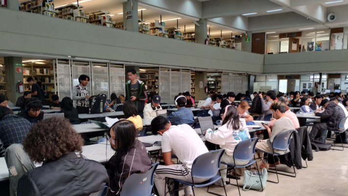

FES ACATLÁN · UNAM
Sistema de préstamo de materiales
Consulta el catálogo y explora el proceso de préstamo de la biblioteca en este prototipo académico del SGPL.

Prototipo académico · Datos de demostración · Sin validez institucional
FES ACATLÁN · UNAM
Consulta el catálogo y explora el proceso de préstamo de la biblioteca en este prototipo académico del SGPL.

Prototipo académico · Datos de demostración · Sin validez institucional